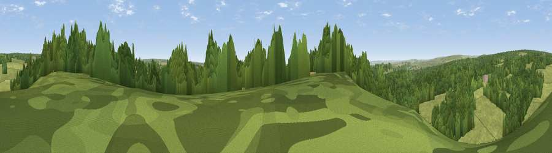

Viewpoint near Newton upon Rawcliffe
#22506 in England · top 51% of its area beats it · near Newton upon RawcliffeWhere it is
The exact computed spot (SE 79025 90625). Click the marker for map links.
The view, rendered

A 360° render of this exact spot computed from the terrain model, tree cover and land cover — summer colours, afternoon light, calibrated against photographs of famous viewpoints. Real trees, hedges and buildings will differ in detail.
The panorama
Grey silhouette: terrain skyline in each direction (720 bearings, Earth curvature and refraction included). Dashed green: skyline with trees (+15 m) and buildings (+8 m) as obstacles. Blue strip: how far the ground is visible on each bearing.
Where the view opens
Wedge length = distance to the farthest visible ground on that bearing (vegetation-aware). Rings at 10, 25 and 50 km.
What fills the view
45% grassland · 40% woodland · 10% cropland · 5% water
Angular shares of the visible panorama (visual magnitude), not map area. Landscape diversity 0.49 (0–1 Shannon).
Key numbers
More beautiful places nearby
The staircase of upgrades: each row has a higher view potential than everything closer. Driving times are estimates from straight-line distance, calibrated against real road routing — check an actual route before setting out.
| Place | Direction | Drive | Score |
|---|---|---|---|
| Viewpoint near Newton upon Rawcliffe | SW · 0 km | ~1 min | 52.4 |
| Viewpoint near Cropton | WSW · 1 km | ~3 min | 54.2 |
| Viewpoint near Newton upon Rawcliffe | ENE · 1 km | ~4 min | 56.2 |
| Viewpoint near Cropton | WSW · 3 km | ~7 min | 59.2 |
| Viewpoint near Cropton | WSW · 3 km | ~8 min | 61.5 |
| Ana Cross | WNW · 7 km | ~15 min | 65.9 |
| Viewpoint near Gillamoor | W · 12 km | ~23 min | 67.2 |
| Viewpoint near Gillamoor | W · 13 km | ~24 min | 72.8 |
54.30513, -0.78703 · source: screening · position refined by local search. Computed location — check access rights before visiting.